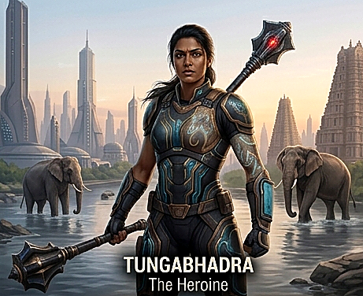

Tungabhadra • The River Queen
Tungabhadra — The River Queen
Bronze-plated armor echoing elephant hide, ornate gold Vijayanagara jewelry, jasmine flowers braided into hair even before combat.
Indian Elephant (Elephas maximus indicus)
Nurture, strength, community. Reads the battlefield through vibrations — sensing movement before she sees it.
Bhoomi-Takshaka — The Earth Serpent King
Controls the serpent network guarding the buried temple, seeking to weaponize its ancient power.
Western Ghats — Hampi ruins — Tungabhadra riverbank — hidden underground temple systems. Built on the memory of Vijayanagara, the greatest empire of medieval South India.